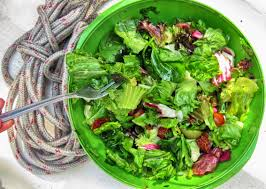

Wilted Lettuce Salad

Description
This wilted lettuce salad with bacon and green onion is lightly coated with a delectable warm dressing made with bacon drippings, lemon, vinegar, and a pinch of sugar. Delicious!
Wilted lettuce salad offers a unique blend of comfort and nutrition, combining the high water content and vitamins of raw lettuce with a slightly cooked, tender texture that is often easier to digest. The warm dressing (commonly bacon grease and vinegar) breaks down the cell walls, making nutrients more accessible while providing a savory, sweet, and tangy flavor profile
Ingredients
- 5 slices bacon
- 2 tablespoons red wine vinegar
- 1 tablespoon lemon juice
- 1 teaspoon white sugar
- ½ teaspoon ground black pepper
- 1 head leaf lettuce - rinsed, dried and torn into bite-size pieces
- 6 green onions with tops, thinly sliced
Steps
- Gather all ingredients.
- Place bacon in a large, deep skillet. Cook over medium high heat until evenly brown. Remove bacon from skillet, crumble and set aside; reserve bacon drippings in pan.
- Add vinegar, lemon juice, sugar, and pepper to the pan with bacon drippings; carefully stir over medium heat until hot.
- Combine lettuce and green onions in a large bowl; add warm dressing and toss to evenly coat.
- Sprinkle salad with bacon and serve.
Credit:Submitted by Mary Jones